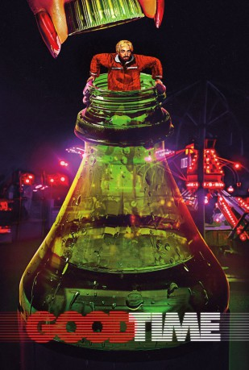

#8022 Good Time
 gesehen am 28.01.2018
gesehen am 28.01.2018
 
 IMDB-Wertung: 7.3 / 10
IMDB-Wertung: 7.3 / 10  Tomatometer: 92
Tomatometer: 92  Metascore: 80
Metascore: 80 
Kleinganove Connie Nikas raubt gemeinsam mit seinem jüngeren, geistig behinderten Bruder Nick eine Bank aus, doch der Überfall geht schief und Nick wird von der Polizei verhaftet und in den Knast gesteckt. Connie will Nick unbedingt gegen Kaution aus dem Gefängnis holen und versucht, sich das Geld von seiner Freundin Corey zu leihen. Als das nicht klappt, begibt er sich auf eine abenteuerliche Odyssee durch die Unterwelt von New York, um die Kohle auf unlautere Art zusammenzukratzen. Dabei muss er sich nicht nur mit Gangstern herumschlagen, sondern befindet sich auch in einem ständigen Wettlauf gegen die Zeit, denn Nick hat sich im Gefängnis bereits Feinde gemacht und schwebt in akuter Gefahr...
Jahr: 2017
Dauer: 101 Minuten
FSK: 12
Land: USA Studio: A24Tonspuren: DTS - ,
Untertitel:
Auflösung: 1080p (1920x808) Größe: 7833 MB
Genre: Thriller, Drama, Krimi
Regisseur: Benny Safdie, Josh Safdie
Drehbuch: Ronald Bronstein
Soundtrack: Daniel Lopatin
Darsteller:
 Robert Pattinson als Connie Nikas
Robert Pattinson als Connie Nikas- Benny Safdie als Nick Nikas
- Taliah Webster als Crystal
 Jennifer Jason Leigh als Corey Ellman
Jennifer Jason Leigh als Corey Ellman Barkhad Abdi als Dash the Park Security Guard
Barkhad Abdi als Dash the Park Security Guard- Necro als Caliph
- Eric Paykert als Eric the Bail Bondsman
- Ben Edelman als Acid Buying Complainer
- Laurence Blum als Nassau County Police Officer A
 Robert Clohessy als The 6th Floor Elmhurst NYPD Police Officer
Robert Clohessy als The 6th Floor Elmhurst NYPD Police Officer Craig muMs Grant als Denny the Acces-A-Ride Driver
Craig muMs Grant als Denny the Acces-A-Ride Driver- George Lee Miles als Annie's Husband Albert
- Souleymane Sy Savane als African Cab Driver
- Mahadeo Shivraj als Uber Driver
- Ratnesh Dubey als Pizza Hut Manager
- Jim Dzurenda als Captain
- Jarvis als Arcade
- Michael Melendez als Epic Player
- Aubrie Therrien als Epic Player
- Buddy Duress als Ray
 Lucas Elliot Eberl als Arcade Guy
Lucas Elliot Eberl als Arcade Guy- Marcos A. Gonzalez als Arresting Police Officer
- Edgar Morais als Arcade Guy
 Cliff Moylan als Officer Patrick
Cliff Moylan als Officer Patrick- Shaun Rey als Undercover Cop
- Peter Verby als Peter the Psychiatrist
- Saida Mansoor als Agapia Nikas
- Gladys Mathon als Annie
- Rose Gregorio als Loren Ellman
- Astrid Corrales als Bail Bondsman's Assistant
- Rachel Black als Rachel the Public Defender
- Hirakish Ranasaki als Trevor
- Maynard Nicholl als Donnie
- Jason Harvey als Nassau County Police Officer B
- Michael Kaufman als EMT Worker #1
- Goran Spadina als EMT Worker #2
- Michael McClard als Detective
- Eliosa Santos als Prostitute
- Bryan Seslow als NYPD Investigating Officer
- Kate Halpern als Stringy Haired Man's Wife
- Christopher Kirk als Stringy Haired Man
- Leticia Ortega als Mexican Woman
- Dorothi Fox als Elderly Woman in Hospital
- Tessa O'Conner als Pizza Hut Employee
- Jim Handley als NYPD Officer Jim
- Peter Linari als Elmhurst Orderly
- Chris Breslin als Male Doctor
- Evonne Walton als Bank Teller
- Lewis Dodley als Lewis Dodley
- Tara Lynn Wagner als Tara Lynn Wagner
Datei: X:\2017(G-M)\Good Time (2017, FSK12, 1920x808).mkv seit 16.01.2018
Festplatte: HD 2017(A-Z)-2018(A-F)
 Es gibt insgesamt 148 Filme in der Gruppe '2017(G-M)'
Es gibt insgesamt 148 Filme in der Gruppe '2017(G-M)'